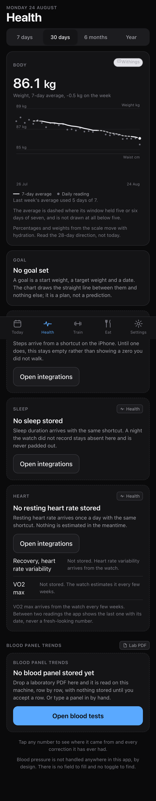

Rubric
okevnowipall
Function
109000133
Craft
900018
Release
400015
Activity
last phase8 BUILD, slice 4 in flight. Slices 1, 2 and 3 are closed.
current slice4, Today, Health and the trend charts. Closes F27-F35, C7, C8, C9. Slice 2 is done but for its share of the three owner-blocked lines. Earlier: slice 2, the gate. Clos...
Evidence, newest first
02:45F66RE-VERIFY 2026-08-24, live origin, Chrome channel, worker allowed. Catalogue holds 44 movements (db: select count(*) from movement = 44; rendered [data-movement] = 44), 44 of 44 carry cue text, shortest 89 chars. Media cache held 44 entries; origin taken away at page AND worker (context.route abort + setOffline, /healthz unreachable = false), then 44 of 44 demonstrations decoded naturalWidth>0. recovery-walk, the LAST card and one of 40 never requested while online, drew /movements/recovery-walk.gif 64x100 offline. Captures: .forge/evidence/reverify-2026-08-24/captures/f66-five-cards-offline-clip.png (five cards, offline), f66-never-seen-recovery-walk-offline.png. CHECK ATTACKED: emptying vernier-media-* before going offline makes the same walk red (recovery-walk decoded width 0), so the assertion is sensitive to the precache. tests/e2e/catalogue-offline.spec.ts 3 passed.
02:02R4 [verifier]docs/privacy.md carries a lawful basis for each of seven purposes, a retention period for each of fifteen data categories which the verifier compared to src/lib/backup/categories.ts in both directions with 0 disagreements, and six named processors with what each receives, checked against every external host reachable from src/ (the three media hosts are attribution URLs only: all 44 movement_media rows are embedding_mode=bundled with local /movements/ paths). Both captures were taken in a real signed-in session on the scratch instance: .forge/evidence/slice-13/verify/f130-export.png after all three files downloaded from the screen, and f131-before.png plus f131-after.png for a permanent deletion of the body category, 127 rows to zero. One limit named in the transcript: a youtube-nocookie embed the owner could create is not in the processor table, and no row on this build uses one. Transcript: .forge/evidence/slice-13/verify/r4-privacy.txt
02:00C16 [verifier]SCRATCH, compared against the local .forge/screens/12-settings-integrations.png and its wireframe. Nine captures: /settings, /settings/ai and /settings/data at 393, 768 and 1280. Horizontal overflow 0px at all nine, zero console errors across the whole walk. All six elements C16 names are carried: integration status with last successful sync and a test control (four integrations, two of them really synced, Withings 24 Aug 01:59 Connected with 'Check it still opens', Google Calendar 20 Aug 09:59 Connected, the other two 'No successful sync yet'), the AI consent switches (four, on 'What Claude may do'), export, permanent delete, archive status and machine state (all on /settings/data). Four departures from the drawn screen are named in the transcript, none of them a missing element. Transcript: .forge/evidence/slice-13/verify/c16-settings.txt
01:56F130 [verifier]SCRATCH. Both exports downloaded by clicking the controls on /settings/data: vernier-export-2026-08-24.json 134864 bytes (46 tables, 27 named exclusions, 333 rows, no credential table) and vernier-export-2026-08-24.zip 74375 bytes (47 members, one CSV per table). Re-imported into a SECOND scratch instance of the same image on 127.0.0.1:3102 against its own database, brought up so migrations and the reference seed ran (movement 44, food 3483, measurement 0 before): each import exits 0 with '333 rows loaded into vernier_verify_import across 46 tables' and 'every table holds exactly what the file carried', table by table. The report downloads as vernier-health-report-2026-08-24.pdf and parses to 1 page opening 'Vernier health report', with the source beside every value. Transcript: .forge/evidence/slice-13/verify/f130-export.txt, files in .forge/evidence/slice-13/downloads-verify/
01:41F132 [verifier]SCRATCH INSTANCE, /settings/data. The machine card carries, in one healthy capture: App container Running since 24 Aug 03:31, Database container Running since 22 Aug 23:06, PostgreSQL 18.6, Disk headroom 217.2 GB free of 240.1 GB and 5691.0 GB free of 62747.4 GB, Last archive 24 Aug 02:40, Last restore check 24 Aug 03:40, and Last successful sync for all four integrations (Withings 24 Aug 02:40, the other three 'No successful sync yet'). Warns at: under 10.7 GB free, an archive over 36 hours old, a source quiet over 36 hours. BOTH STATED HOUR THRESHOLDS TESTED AT THEIR EDGES: archive 35 hours old renders class 'num', 37 hours renders 'num warn'; Withings sync 35 hours renders 'num', 37 hours renders 'num warn'. Degraded capture taken with the newest run failed (cause not_writable, EACCES), the last good archive 50 hours old and restore_check emptied. NO CREDENTIAL: a value seeded into integration_credential (secret_ciphertext, nonce, tag, key fingerprint) and ingest_credential.token_hash, then the rendered markup of 56586 characters searched for it: absent; searched for the container's MASTER_KEY: absent; positive control, the same search for 'Warns at' which IS on the screen: present. Transcript: .forge/evidence/slice-13/verify/f132-machine.txt, captures f132-healthy.png and f132-degraded.png
01:38F124 [verifier]The LIVE nightly archive vernier-20260824T010000Z.archive, written by the scheduled job at 03:00:00 local into the configured iCloud Drive destination, outcome ok, integrity verified. node scripts/restore.mjs verify exits 0 and lists after decryption: manifest.json 8012 bytes, schema.sql 143282, data.sql 8175213, storage.tar 1132032, each with its sha256, plus 74 tables with their row counts and 'every chunk authenticated and every member matched its digest'. Chunk-framed: 10 chunks of 1 MiB, the last flagged final, aes-256-gcm from node:crypto with a 48-byte header (magic VERNIER1, version, salt, scrypt parameters) as AAD together with each chunk's sequence and final flag. PROCESS TRACE: a /proc poller inside the app container took 255857 process samples across one whole archive run started by pressing Back up now on the shipped screen, 168620 of them during the run, and saw exactly two process names ever: next-server and the poller's own sh. No openssl, gpg, age, pg_dump, pg_restore or psql, and none of them exists in the image (675 executables on PATH, none of these). src/ imports child_process nowhere. Transcripts: .forge/evidence/slice-13/verify/f124-archive-listing.txt and f124-process-trace.txt
01:37F129 [verifier]Volume declarations: pgdata as vernier_pgdata at /var/lib/postgresql (database), storage as vernier_storage at /app/storage (media and documents), and the archive destination as a host bind of BACKUP_DIR at /app/backups. Confirmed against the running containers' mount tables. The image's writable data paths, listed with no volumes mounted: /app/storage exists with 0 files, /app/backups absent, /var/lib/postgresql absent, so no product data is inside the image. Repository search over all 2475 tracked files for down -v, down --volumes, docker volume rm, docker volume prune, system prune --volumes and rm -rf on the postgres data path: 8 matches, every one inside .forge/, of which six quote the rule or grep for it, one is GOAL.md stating it, and one is slice 1's cold-start transcript on an empty database. Nothing under scripts/, docs/, src/, compose.yaml, Dockerfile or package.json. Transcript: .forge/evidence/slice-13/verify/f129-volumes.txt
Latest captures · 6 of 60, all in the popin

Dispatches · 79 agent(s) · 13 workflow(s) · 3344 stop(s) · last 1m ago
lead · the session · 64 finished more than 30 min ago, hidden
builderClose the last five suite failures<synthetic>7.9Mrunning
general-purpose ×34
builder ×23
verifier ×15
architect ×4
router ×1
scout ×1
designer ×1
workflow agents ×57
helper stops ×3279
Sitemap2 of 5
/
eat10
data-sources
entry9
:id1
estimate7
food3
:id1
import4
recipe1
:id1
shopping7
targets1
health45
labs
:id1
finish
row4
:ordinal
new
reminders
review12
next4
settings32
ai3
data8
ingest
notifications
shortcut1
sign-in
source19
:id1
train9
calendar4
catalogue1
media4
readiness1
session2
:id1
edit2
value3
:id1
designed, not routed
01Information arc...
02Screen list3
03Tokens
04Interaction notes
05The three decis...9
35 route(s) on disk, 0 carrying a designed screen · 772 of 784 capture(s) prove no single screen
176 of 257 capture(s) named in EVIDENCE.md are no longer on disk.
176 of 257 capture(s) named in EVIDENCE.md are no longer on disk.